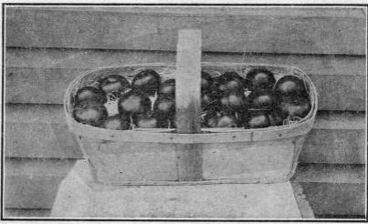

657. Marketing Tomato
Description
This section is from the book "Vegetable Gardening", by Ralph L. Watts. Also available from Amazon: Vegetable Gardening.
657. Marketing Tomato
The utmost care should be exercised in preparation for market if highest prices are to be realized. The tomatoes should be cleaned, stems removed and then carefully graded. Packages in great variety are used in handling this crop. The bushel basket is used in Michigan (Figure 46); bushel box at Boston; baskets of various forms and sizes; crates as represented in Figure 48 being especially desirable for long shipments. Figure 107 shows a package becoming more popular every year. Tomatoes are often wrapped in paper before packing. When grown for canning the ripe tomatoes are picked into crates or baskets and handled or shipped to the factories without cleaning or further attention.
658. Yields And Returns
According to Tracy the average yield of tomatoes grown for canneries (Tracy, W. W., "Tomato Culture," p. 117) probably does not exceed 100 bushels an acre. It is not difficult to produce 500 bushels on an acre. Yields of 800 are not unusual and even larger crops are frequently reported. The price paid for tomatoes by canning factories ranges from $7 to $10 a ton. The expenses of production and delivery to the factories vary so much that any figures which might be given would have very little value. The cost of starting the plants is a factor sometimes. High cost of labor to harvest the crop and a long haul to the factory may reduce the profits to a small margin. With good management, suitable land, labor at a reasonable cost and fairly close proximity to the factory, a fair profit should be realized at $9 to $10 a ton.
Fig. 107. tomatoes packed for market.
When grown for market the profit should not be less than $100 an acre, and it is often much greater. Market conditions and the skill of the operator are the chief factors counting for success. Early tomatoes often sell at $2 or more a 6-basket carrier, while late in the season the price may become so low that it scarcely pays to harvest the crop. As a rule, the early crop is the more remunerative, while late tomatoes frequently pay good profits.
659. Insects
Cutworms are often destructive to the young plants. Surplus stock should be grown and held to fill vacancies that may occur from the depredations of these pests. Poisoned baits of bran, clover, weeds and other vegetable matter are usually effective when placed about the plants. Flea-beetles are also serious enemies sometimes.
660. Diseases
The tomato is subject to various diseases, which often become serious. Rotation is the best means of prevention. Spraying with bordeaux mixture in the seed bed, and also after transplanting in the frames or the greenhouse, and in the garden or field, is frequently necessary to control the various fungous diseases.
Continue to:
Tags
plants, crops, gardening, cultivated, harvesting, food ,greenhouses, fertiliser, vegitables